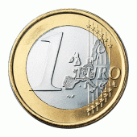

Visie
Ontwikkel allereerst voor uzelf een heldere visie. Maak hierbij eventueel verschillende scenario’s in hoe u denkt dat de toekomst eruit zal gaan zien. Hoeveel euro’s wilt u binnen nu en een maand of een jaar verdienen? Maak alles concreet. Formuleer uw doelstellingen. Er moet voor uzelf een goede duidelijkheid ontstaan over wat u wilt bereiken. Op deze manier kunt u ergens veel beter naartoe werken!
